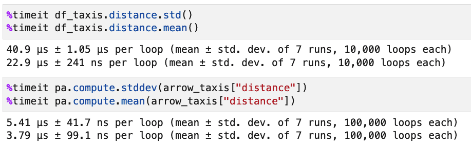

Python Parquet and Arrow: Using PyArrow with Pandas
Parquet and Arrow are two Apache projects available in Python via the PyArrow library. Parquet is an efficient, compressed, column-oriented storage format for arrays and tables of data. Arrow is an in-memory columnar format for data analysis that is designed to be used across different languages. It currently boasts supported libraries for several important languages, including Python. Parquet and Arrow work together well. In Python, the same PyArrow library supports both.
Arrow supports tabular data as well as nested (hierarchical) data. Arrow tables are two-dimensional containers. They consist of a set of columns that are “chunked arrays” (arrays where data is often stored contiguously, but it is not required), along with a schema that describes each field in the data (where a field is either a column or a nested data type such as a struct.
Arrow Tables vs. Pandas DataFrames
If you’re familiar with Python’s data science tools, the idea of an in-memory tool for dealing with two-dimensional data may remind you of a Pandas DataFrame. Similarly, the Arrow columns may remind you of Pandas Series.
That’s certainly how I approached learning about Arrow, and it raises several interesting questions about Arrow and Parquet that this article will focus on.
Can we use Pandas DataFrames and Arrow tables together, and if so, how is this done? (It turns out the answer is yes, and it’s quite simple, as we’ll see).
In what ways are Arrow tables “better” than Pandas DataFrames? In other words, for which tasks are Arrow tables better suited? Conversely, what tasks are possible or easy in Pandas that are difficult or impossible in Arrow?
As an on-disk format, how does Parquet compare to popular alternatives such as feather, orc, CSV, etc.?
In this article, we’ll investigate the answers to these questions, but as always, we want you to be able to try the code and check the results for yourself, so let’s begin with the setup we used.
Installing Using Pip or Conda
Getting started with PyArrow is easy with either Conda or pip. In Conda, you can create and activate an environment to follow along with this article using the following steps.
conda create -c conda-forge -n arrow python=3.11 pyarrow jupyterlab seaborn
# Enter y to continue when prompted
conda activate arrow
Using pip and installing to a virtual environment, the steps are as follows:
python -m venv venv
source venv/bin/activate
python -m pip install --upgrade pip
pip install jupyterlab seaborn pyarrow
With one of these done, running jupyter lab will allow you to follow along with the rest of the article.
Using Arrow With Pandas
You may have noticed that we installed Seaborn. This was to take advantage of the built-in data sets, so we could be productive immediately. We begin by importing a few packages and loading the taxis dataset into a Pandas DataFrame. We’ll also get a quick feel for the data.
import seaborn as sns
import pyarrow as pa
import pyarrow.parquet as parquet
df_taxis = sns.load_dataset('taxis')
print(type(df_taxis))
print(df_taxis.shape)
df_taxis.head()
Output:
<class 'pandas.core.frame.DataFrame'>
(6433, 14)
pickup dropoff passengers distance fare tip tolls total color payment pickup_zone dropoff_zone pickup_borough dropoff_borough
0 2019-03-23 20:21:09 2019-03-23 20:27:24 1 1.60 7.0 2.15 0.0 12.95 yellow credit card Lenox Hill West UN/Turtle Bay South Manhattan Manhattan
1 2019-03-04 16:11:55 2019-03-04 16:19:00 1 0.79 5.0 0.00 0.0 9.30 yellow cash Upper West Side South Upper West Side South Manhattan Manhattan
2 2019-03-27 17:53:01 2019-03-27 18:00:25 1 1.37 7.5 2.36 0.0 14.16 yellow credit card Alphabet City West Village Manhattan Manhattan
3 2019-03-10 01:23:59 2019-03-10 01:49:51 1 7.70 27.0 6.15 0.0 36.95 yellow credit card Hudson Sq Yorkville West Manhattan Manhattan
4 2019-03-30 13:27:42 2019-03-30 13:37:14 3 2.16 9.0 1.10 0.0 13.40 yellow credit card Midtown East Yorkville West Manhattan Manhattan
Of course, we can create an arrow Table independently of Pandas, but for our purposes, it’s more interesting to convert the Pandas DataFrame. The PyArrow Table class contains several construction functions beginning with “from_,” and we pass a copy of our df_taxis to the appropriate function. We call copy on the DataFrame to ensure we’re not just mapping our Arrow Table onto existing data.
arrow_taxis = pyarrow.Table.from_pandas(df_taxis.copy())
(We can also go the other way. Given an arrow Table, we can convert it to a Pandas DataFrame, using the to_pandas method.)
With a Pandas DataFrame and a PyArrow Table in memory, we can now compare them.
Arrow Tables vs. Pandas DataFrames
The first thing we notice about the Arrow Table is that the default display looks very different. Entering just the Table instance’s name in Jupyter (arrow_taxis) we don’t see the summary in the usual tabular output. Instead, we see the type of the object, the column names and types, and some summary data for the first few columns:
pyarrow.Table
pickup: timestamp[ns]
dropoff: timestamp[ns]
passengers: int64
distance: double
fare: double
tip: double
tolls: double
total: double
color: string
payment: string
pickup_zone: string
dropoff_zone: string
pickup_borough: string
dropoff_borough: string
----
# Python Parquet and Arrow: Using PyArrow with Pandaspickup: [[2019-03-23 20:21:09.000000000,2019-03-04 16:11:55.000000000,2019-03-27 17:53:01.000000000,2019-03-10 01:23:59.000000000,2019-03-30 13:27:42.000000000,...,2019-03-31 09:51:53.000000000,2019-03-31 17:38:00.000000000,2019-03-23 22:55:18.000000000,2019-03-04 10:09:25.000000000,2019-03-13 19:31:22.000000000]]
dropoff: [[2019-03-23 20:27:24.000000000,2019-03-04 16:19:00.000000000,2019-03-27 18:00:25.000000000,2019-03-10 01:49:51.000000000,2019-03-30 13:37:14.000000000,...,2019-03-31 09:55:27.000000000,2019-03-31 18:34:23.000000000,2019-03-23 23:14:25.000000000,2019-03-04 10:14:29.000000000,2019-03-13 19:48:02.000000000]]
passengers: [[1,1,1,1,3,...,1,1,1,1,1]]
distance: [[1.6,0.79,1.37,7.7,2.16,...,0.75,18.74,4.14,1.12,3.85]]
fare: [[7,5,7.5,27,9,...,4.5,58,16,6,15]]
tip: [[2.15,0,2.36,6.15,1.1,...,1.06,0,0,0,3.36]]
tolls: [[0,0,0,0,0,...,0,0,0,0,0]]
total: [[12.95,9.3,14.16,36.95,13.4,...,6.36,58.8,17.3,6.8,20.16]]
color: [["yellow","yellow","yellow","yellow","yellow",...,"green","green","green","green","green"]]
payment: [["credit card","cash","credit card","credit card","credit card",...,"credit card","credit card","cash","credit card","credit card"]]
...
As with Pandas, there are methods that support selecting subsets of the data. We can select columns into a new Table with the select method and get ranges of rows using the (zero-copy) slice method. In the following code, we show how to chain the two calls to select the first five values in the leftmost two columns:
arrow_taxis.select(['pickup', 'dropoff']).slice(0, 5)
Output:
pyarrow.Table pickup: timestamp[ns] dropoff: timestamp[ns]
Python Parquet and Arrow: Using PyArrow with Pandaspickup: [[2019-03-23 20:21:09.000000000,2019-03-04 16:11:55.000000000,2019-03-27 17:53:01.000000000,2019-03-10 01:23:59.000000000,2019-03-30 13:27:42.000000000]]
dropoff: [[2019-03-23 20:27:24.000000000,2019-03-04 16:19:00.000000000,2019-03-27 18:00:25.000000000,2019-03-10 01:49:51.000000000,2019-03-30 13:37:14.000000000]]
We can also select rows according to some criteria using the filter method. To do this, we first have to create an expression on which the filter will operate. The following code shows how to do this. Here we select and display the fares that were at least $100.
import pyarrow.compute as pc
expr = pc.field("fare") >= 100
high_fares = arrow_taxis.filter(expr)
print(high_fares["fare"])
Output:
[
[
120,
130,
103,
143.5,
100,
150,
150
]
]
Although Arrow allows subsetting data down to certain rows or columns or even individual values just as Pandas does, these values are immutable in Arrow. Thus, for example, arrow_taxis[“fare”][0] outputs <pyarrow.DoubleScalar: 7.0>, trying something like “arrow_taxis[“fare”][0] = 10” throws an exception. In Pandas, in contrast, we can set the value directly (with a warning) or avoid the warning with the DataFrame.at method:
print(df_taxis.at[0, 'fare'])
df_taxis.at[0, 'fare'] = 10
print(df_taxis.at[0, 'fare'])
Output:
7.0 10.0
Although the immutability of Arrow data limits the use of it to purely analytic work as opposed to data manipulation, for these operations Arrow Tables offer significant performance and memory usage improvements over Pandas DataFrames.
We can demonstrate the advantage in terms of memory usage with the getsizeof method from the Python sys module:
import sys
print(sys.getsizeof(df_taxis))
print(sys.getsizeof(arrow_taxis))
Output:
3019880
982757
As we can see, the Arrow Table takes just under a third of the memory of the Python DataFrame. In addition to being smaller in memory, we’ve found Arrow Tables to be much faster for performing various aggregate or summary operations. Here are some representative results showing Pandas first, then PyArrow:

Parquet vs. Other Storage Formats for Pandas
As we’ve seen, Apache Arrow provides better performance than Pandas for many operations. However, the fact that more users are familiar with Pandas and that Arrow data cannot easily be “wrangled” (modified) may mean that many users will want to stick with Pandas DataFrames in many cases. Even if that’s the case for you, however, you may still want to take advantage of the excellent performance and compression characteristics of the Parquet storage format.
Installing PyArrow enables you to write and read Pandas DataFrames using two data formats that Pandas does not otherwise support: Parquet and ORC. In the case of Parquet, Pandas can also read and write such files using a module called “fastparquet.”
Using %timeit, we ran several tests where we wrote df_taxis using Parquet and other supported file formats, then read it back. We wanted to know each case’s read time, write time, and file size. (Note: we also needed to install fastparquet and openpyxl to compile this table).
Summary
The table below summarizes the results, which we’ll follow with a discussion.
| Operation | Speed | File Size |
| df_taxis.to_parquet (pyarrow) | 4.55 ms | 191,788 |
| pandas.read_parquet (pyarrow) | 2.03 ms | |
| df_taxis.to_parquet (fastparquet) | 14.2 ms | 275,765 |
| pandas.read_parquet (fastparquet) | 2.7 ms | |
| df_taxis.to_feather | 2.74 ms | 428,818 |
| pandas.read_feather | 1.48 ms | |
| df_taxis.to_orc | 7.01 ms | 751,897 |
| pandas.read_orc | 5.65 ms | |
| df_taxis.to_excel | 874 ms | 540,683 |
| pandas.read_excel | 560 ms | |
| df_taxis.to_csv | 32.7 ms | 900,405 |
| pandas.read_csv | 8.13 ms |
Discussion
Parquet read and write operations were very performant, with the PyArrow engine being faster than fastparquet. For sheer speed, however, the feather format performed best, and Excel performed the worst. Regarding file size, PyArrow parquet turned in the smallest size at 191,788 bytes, a 4x space saving over CSV (the worst offender) which took up almost a gigabyte for the same data.
All else being equal, Parquet using PyArrow turned in the best balance of reasonable speed and great compression. So for wrangling large data sets with Pandas, Parquet is a great choice.
Of course, CSV is still ubiquitous. It may be inefficient to parse and wasteful of space, but the fact that it’s human-readable and almost universally supported makes it the format of choice, especially for small example data sets.
Excel and ORC should be considered only in cases where you need to use them. The documentation for ORC boasts that its compression may sometimes be better than for Parquet, but we didn’t find that to be the case for our files written using Pandas.
I should point out that the usual caveats that are always true of benchmarks apply here. These results are a snapshot taken on a particular machine with a particular data set. In addition, in all cases, we stored the data with as few options as possible besides the file name, so there may be differences in whether the index is stored between file formats.
Closing Thoughts: PyArrow Beyond Pandas
PyArrow is an important project that has many more important uses than we’ve been able to cover here. One exciting area of development that has not yet stabilized is PyArrow’s flight module, which uses the Arrow data format to efficiently push rows of data over a network in much the same way as a database driver based on ODBC or JDBC would. The Python PyArrow Cookbook has an Arrow Flight tutorial that shows how to run a Flight server against a directory containing Parquet files. This tutorial leverages Arrow’s ability to stream data sets (a subset of rows) to avoid having to have entire data sets in memory.